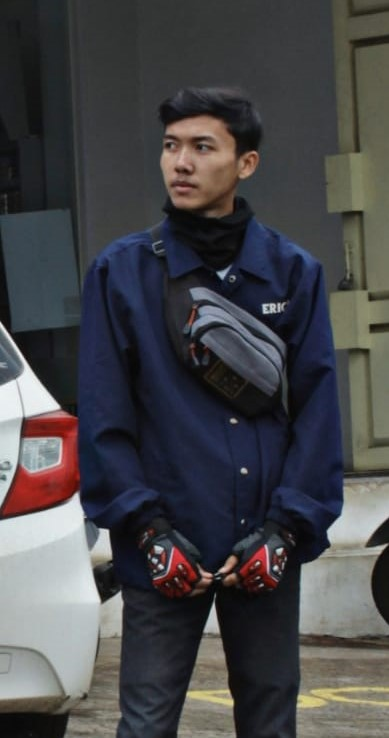

My Curiculum Vitae
A. Biodata Pribadi
- Nama : M. Andre Setiawan
- Tempat Tanggal Lahir : Bandung, 12 Desember 2000
- Jenis Kelamin : Laki-Laki
- Hobby : Otomotif, touring
- Program Studi : Sistem Informasi Kelautan
- Nomor Induk Mahasiswa : 1903325
- Email : m.andre12@upi.edu
B. Riwayat Pendidikan
- SD : SDN Pasawahan III
- SMP : SMP Negeri 21 Bandung
- SMA : SMA Telkom Bandung
- S1 : Universitas Pendidikan Indonesia
C. Pengalaman Organisasi
- Ketua Palang Merah Remaja SMA Telkom Bandung
- Anggota Paskibra SMA Telkom Bandung
- GMPM LH Universitas Pendidikan Indonesia
D. Kegiatan Yang Pernah Diikuti
- Jumbara PMR Jawa Barat
- Pasukan pengibar bendera 17 Agustus
- MOKKAKU UPI 2019
- MABIM SIK 2019
- LDK GMPM LH UPI Kampus Serang
E. Penghargaan atau Mendali yang Pernah Diraih
- Juara 1 Tandu Darurat Ganda Campuran
- Juara 2 Madya Lomba Keterampilan Baris-berbaris
- Juara 3 Madya Lomba Keterampilan Baris-berbaris
- Siswa Hebat SMA Telkom Bandung
F. Sosial Media
 : andrestwn_12
: andrestwn_12 :Andre Setiawan
:Andre Setiawan- : 082215344132
Foto Pribadi
